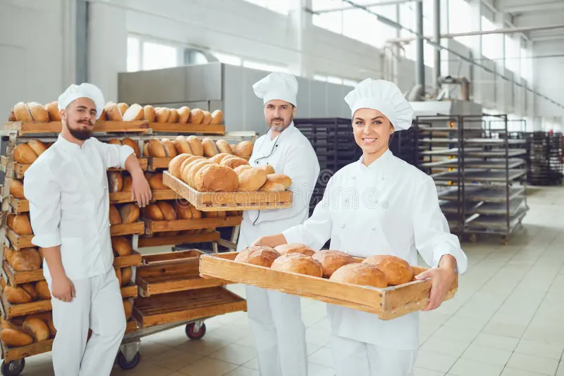

Bienvenido a Lucero Pastelería, donde creamos deliciosos pasteles franceses con pasión y calidad. En el encantador pueblo de Belleza, se encuentra la pastelería Lucero, dirigida por la apasionada Isabella. Descendiente de una familia de pasteleros, Isabella lleva consigo la tradición y la creatividad en cada delicia que crea. Lucero Pastelería, con sus paredes adornadas con fotos de generaciones anteriores, es un lugar mágico donde la comunidad se reúne para saborear eclairs, croissants y macarons únicos. Isabella comparte su pasión por la pastelería a través de eventos especiales, creando recuerdos dulces que perduran en el corazón de Belleza.
Nuestro equipo está formado por expertos pasteleros que se esfuerzan por brindar experiencias dulces inolvidables a nuestros clientes. Trabajamos con los ingredientes más frescos y seguimos recetas tradicionales para garantizar la auténtica calidad francesa en cada bocado.
¡Ven y descubre el mundo de sabores que ofrecemos en Lucero Pastelería!